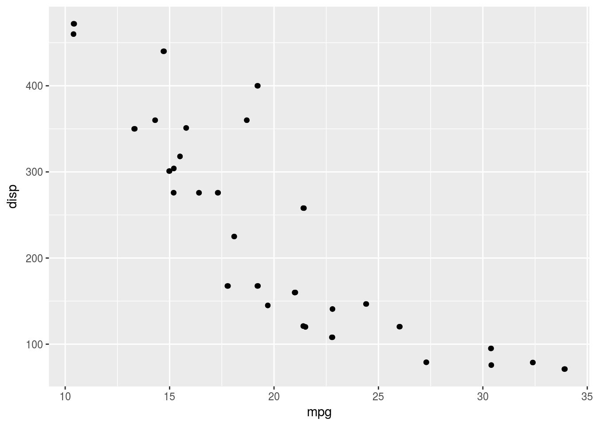

The knitr package can execute a variety of language chunks:
For Python, instead of {r}, we begin the code chunk with {python}.
x = 'hello, python world!'
print(x.split(' '))FALSE ['hello,', 'python', 'world!']Chunk options echo and results are all valid when using Python.
If the Python code generates raw HTML or LaTeX, the results='asis' option ensures that it is passed straight into the document’s output stream.
def aucarre(x):
print(x ** 2)
a = 3
aucarre(a)9
By default, the interpreter returned by Sys.which("python") is used to execute the code. We can use a different python interpreter with engine.path"/Users/me/anaconda/bin/python" option.
import sys
print(sys.version)Exchanging data between R chunks and Python chunks (and between Python chunks) is done via the file system.
With data frames, we can use the feather package.
feather1 transfer a data frame created with Pandas to R for plotting with ggplot2:
Import the data with Python.
import pandas
import feather
cars = pandas.read_csv("img/mtcars.csv")
feather.write_dataframe(cars, "img/cars.feather")Read the feather file from R and plot the data frame using ggplot2.
library(feather)
mtcars2 <- read_feather("img/cars.feather")
head(mtcars2, 3)library(ggplot2)
ggplot(mtcars2, aes(mpg, disp)) +
geom_point() +
geom_jitter()